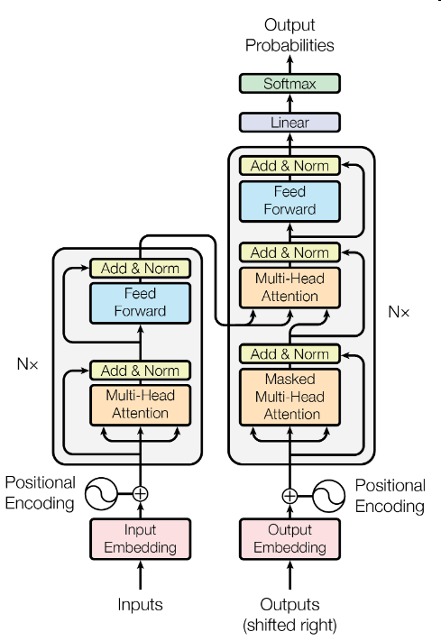
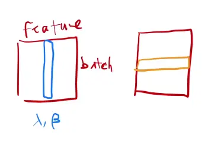
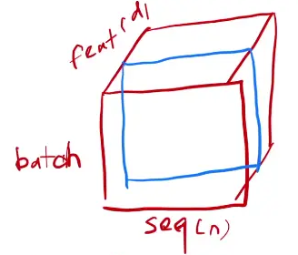
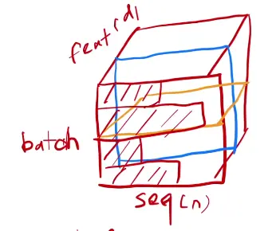
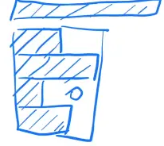
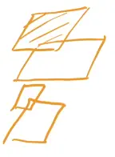
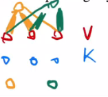
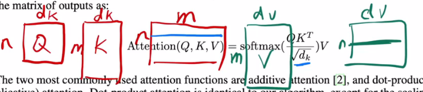
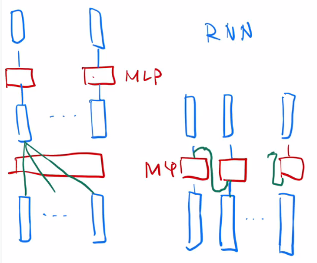
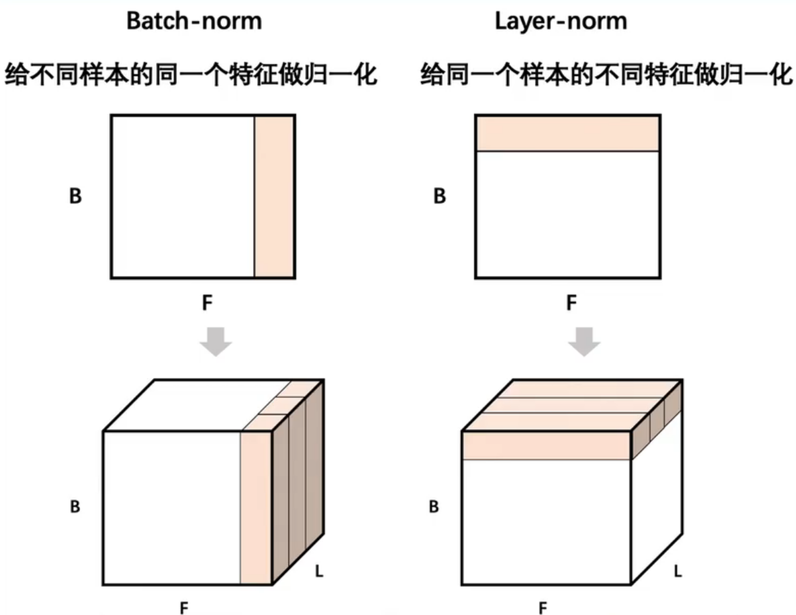

论文精读 Transformer
论文地址: https://arxiv.org/pdf/1810.04805.pdf
Transformer Model：Transformer架构解析
代码链接：personal/transformer · GitHub
1.Transformer
1.摘要
1、transduction models”：序列转录模型：给以序列生成另一个序列
2.结论
3.导言
4.相关工作
5.模型

5.1 LayerNorm 和 BatchNorm
（1）BatchNorm 简单的 2 维 情况（蓝色）
每一行是一个样本 X，每一列是 一个 feature
BatchNorm：每次把一列（1 个 feature）放在一个 mini-batch 里，均值变成 0， 方差变成 1 的标准化。
How：（该列向量 - mini-batch 该列向量的均值）/（mini - batch 该列向量的方差）
训练时：mini-batch 计算均值；
测试时：使用 全局 均值、方差。
BatchNorm 还会学 lambda beta，BatchNorm 可以通过学习将向量 放缩成 任意均值、任意方差 的一个向量。
（2）Layernorm （黄色）
LayerNorm 跟 BatchNorm 在很多时候几乎是一样的，除了实现的方法有点不一样之外。
LayerNorm：对每个样本做 Normalization（把每一行变成 均值为 0、方差为 1），不是对每个特征做 normalization。

（3）LayerNorm 在操作上 和 BatchNorm (二维输入) 的关系
LayerNorm 整个把数据转置一次，放到 BatchNorm 里面出来的结果，再转置回去，基本上可以得到LayerNorm的结果。
（4）三维输入
Transformer 和 RNN 里面：3 维输入。
- 输入的是一个序列的样本，每个样本中有很多元素，是一个序列。
- 一个句子里面有 n 个词，每个词对应一个向量，+ 一个 batch —> 3 维
列 是 seq 序列长度 n；第 3 维 feature 是每个词额外的向量，d = 512 in transformer
BatchNorm （蓝色线）：每次取一个特征，切一块，拉成一个向量，均值为 0 、方差为 1 的标准化。
LayerNorm (橙色)：横着切

（5）举例
时序数据中 样本长度可能不一样。
举例分析：4个长度不一样的样本，0 填充到 max_len

BatchNorm 切出来的结果，BatchNorm 计算均值和方差，有效的是阴影部分，其余是 0
Mini-batch 的均值和方差：如果样本长度变化比较大的时候，每次计算小批量的均值和方差，均值和方差的抖动大。
全局的均值和方差：测试时遇到一个特别长的全新样本 （最上方蓝色阴影块），训练时未见过，训练时计算的均值和方差可能不好用。

LayerNorm 切出来的结果
LayerNorm 每个样本自己算均值和方差，不需要存全局的均值和方差。
LayerNorm 更稳定，不管样本长还是短，均值和方差是在每个样本内计算。

（6）LayerNorm 和 BatchNorm 的例子理解：n 本书
BatchNorm：n本书，每本书的第一页拿出来，根据 n 本书的第一页的字数均值 做 Norm
LayerNorm：针对某一本书，这本书的每一页拿出来，根据次数每页的字数均值，自己做 Norm
5.2 注意力
（1）注意力机制
注意力函数是 一个将一个 query 和一些 key - value 对 映射成一个输出的函数，其中所有的 query、key、value 和 output 都是一些向量。
具体来说，output 是 value 的一个加权和 —> 输出的维度 == value 的维度。
output 中 value 的权重 = 查询 query 和对应的 key 的相似度 or compatibility function
权重等价于 query 和对应的 key 的相似度

图中，红色表示value，蓝色表示key：
- 给定q为黄色，靠近key的第一第二个，所以output更多偏向与value的第一和第二个；
- 给定q为绿色，靠近key的第二第三个，所以output更多偏向于value的第二和第三个。
虽然 key-value 并没有变，但是随着 query 的改变，因为权重的分配不一样，导致 输出会有不一样，这就是注意力机制。
（2）实际使用
实际计算：不会一个 query 一个 query 的计算，因为运算比较慢。把多个 query 写成 一个矩阵，并行化运算。
每一行蓝色的线：一个 query 对所有 key 的内积值，然后再除以sqrt(dk)， 再做 softmax。 softmax 是对每一行的值做 softmax，然后每一行之间是独立的，会得到权重。
绿色的每一行它就是 attention。
attention 的计算：2次矩阵乘法、并行计算

（3）Scaled Dot-Product Attention 和 别的注意力机制的区别
2 种常见的注意力机制：加性的注意力机制（它可以处理你的 query 和 key 不等长的情况，点积 dot-product 的注意力机制 （本文采用 scaled，➗ sqrt(dk) ），所以你可以看到它的名字它叫做 scale 的。
选用 dot-product 原因：两种注意力机制其实都差不多， 点乘实现 简单、高效，两次矩阵乘法计算。
scale dot-product 原因 ➗ sqrt(dk) ：防止softmax函数的梯度消失。
dk不是很大的时候，➗ 不➗ 都 ok。dk 比较大时 （2 个向量的长度比较长的时候），点积的值会比较大，or 会比较小。
当你的值比较大的时候，相对的差距会变大，导致最大值 softmax会更加靠近于1，剩下那些值就会更加靠近于0。值就会更加向两端靠拢，算梯度的时候，梯度比较小。
softmax会让大的数据更大，小的更小
因为 softmax 最后的结果是希望 softmax 的预测值，置信的地方尽量靠近，不置信的地方尽量靠近零，以保证收敛差不多了。这时候梯度就会变得比较小，那就会跑不动。
在 trasformer 里面一般用的 dk 比较大 (本文 512)，所以➗ sqrt(dk) 是一个不错的选择。
（4）怎么做mask？
避免在 t 时刻，看到 t 时刻以后的输入。
在计算权重的时候，t 时刻只用了 v1, …, vt-1 的结果，不要用到 t 时刻以后的内容。
把 t 时刻以后 Qt 和 Kt 的值换成一个很大的负数，如 1 ^ (-10)，进入 softmax 后，权重为0。 —> 和 V 矩阵做矩阵乘法时，没看到 t 时刻以后的内容，只看 t 时刻之前的 key - value pair。
理解：mask是个 0 1矩阵，和attention（scale QK）size一样，t 时刻以后 mask 为 0。
（5）多头注意力机制
与其做一个单个的注意力函数，不如说把整个 query、key、value 整个投影 project 到 1个低维，投影 h 次。然后再做 h 次的注意力函数，把每一个函数的输出 拼接在一起，然后 again projected，会得到最终的输出。
输入是：原始的 value、key、query
进入一个线形层，线形层把 value、key、query 投影到比较低的维度。然后再做一个 scaled dot product 。
执行 h 次会得到 h 个输出，再把 h 个 输出向量全部合并 concat 在一起，最后做一次线性的投影 Linear，会回到我们的 multi-head attention。
为什么要做多头注意力机制呢？一个 dot product 的注意力里面，没有什么可以学的参数。具体函数就是内积，为了识别不一样的模式，希望有不一样的计算相似度的办法。加性 attention 有一个权重可学，也许能学到一些内容。
本文的 dot-product attention，先投影到低维，投影的 w 是可以学习的。
multi-head attention 给 h 次机会去学习 不一样的投影的方法，使得在投影进去的度量空间里面能够去匹配不同模式需要的一些相似函数，然后把 h 个 heads 拼接起来，最后再做一次投影。
有点像 CNN 多个输出通道的感觉。
multi-head attention 具体公式
Multi-head 的输入还是Q,K,V
但是输出是 不同的头的输出的 concat 起来，再投影到一个 WO 里面。
每一个头 hi 是把 Q,K,V 通过 可以学习的 Wq, Wk, Wv 投影到 dv 上，再通过注意力函数，得到 headi。
5.3 FFN
作用在最后一个维度的 MLP
MLP: applied to each position separtely and identically.
Point-wise: 把一个 MLP 对每一个词 （position）作用一次，对每个词作用的是同样的 MLP
FFN： Linear + ReLU + Linear
单隐藏层的 MLP，中间 W1 扩维到4倍 2048，最后 W2 投影回到 512 维度大小，便于残差连接。
pytorch实现：2个线性层。pytorch在输入是3d的时候，默认在最后一个维度做计算。
（1）Transformer和RNN
最简单情况：没有残差连接、没有 layernorm、 attention 单头、没有投影。看和 RNN 区别
attention 对输入做一个加权和，加权和 进入 point-wise MLP。（画了多个红色方块 MLP， 是一个权重相同的 MLP）
point-wise MLP 对 每个输入的点 做计算，得到输出。
attention 作用：把整个序列里面的信息抓取出来，做一次汇聚 aggregation

RNN 跟 transformer 异：如何传递序列的信息
RNN 是把上一个时刻的信息输出传入下一个时候做输入。Transformer 通过一个 attention 层，去全局的拿到整个序列里面信息，再用 MLP 做语义的转换。
RNN 跟 transformer 同：语义空间的转换 + 关注点
用一个线性层 or 一个 MLP 来做语义空间的转换。
关注点：怎么有效的去使用序列的信息。
5.4 Embedding
embedding：将输入的一个词、词语 token 映射成 为一个长为 d 的向量。学习到的长为 d 的向量 来表示整个词、词语 token。
5.5 Position Encoding
How：RNN 把上一时刻的输出 作为下一个时刻的输入，来传递时序信息。
How：attention 在输入里面加入时序信息 —> positional encoding。一个在位置 i 的词，会把 i 位置信息加入到输入里面。
6.实验
7.评论
Transformer 模型出圈 —> 多模态：像 CNN 对 CV 的作用，不仅仅应用在NLP，在 CV、Video上也有很好的应用。
启示：一个新的模型可以在 DL 上 通用。人的感知是多模态的、使得 Transformer 在文本、语音、视频抽取多维特征。
对 Transformer 中 attention 的理解：attention只是起到 把整个序列的信息聚合起来 的作用，后面的 MLP 和 残差连接 是缺一不可的。去掉 MLP 和 残差连接，只有 attention，也什么都训练不出来。
attention 用了更广泛的 inductive bias 归置偏置，使得 attention 没有用空间上的假设，取得和 CNN 一样、 甚至更好的结果。
代价：假设更加一般、对数据的抓取能力差，需要使用更多的数据、更大的模型 才能训练出一样的效果
8.Transformer常见问题与回答总结
Transformer为何使用多头注意力机制？（为什么不使用一个头）
- 多头保证了transformer可以注意到不同子空间的信息，捕捉到更加丰富的特征信息。可以类比CNN中同时使用多个滤波器的作用，直观上讲，多头的注意力有助于网络捕捉到更丰富的特征/信息。
- 参考：https://www.zhihu.com/question/341222779
Transformer为什么Q和K使用不同的权重矩阵生成，为何不能使用同一个值进行自身的点乘？ （注意和第一个问题的区别）
- 使用Q/K/V不相同可以保证在不同空间进行投影，增强了表达能力，提高了泛化能力。
- 同时，由softmax函数的性质决定，实质做的是一个soft版本的arg max操作，得到的向量接近一个one-hot向量（接近程度根据这组数的数量级有所不同）。如果令Q=K，那么得到的模型大概率会得到一个类似单位矩阵的attention矩阵，这样self-attention就退化成一个point-wise线性映射。这样至少是违反了设计的初衷。
- 参考：https://www.zhihu.com/question/319339652
Transformer计算attention的时候为何选择点乘而不是加法？两者计算复杂度和效果上有什么区别？
- K和Q的点乘是为了得到一个attention score 矩阵，用来对V进行提纯。K和Q使用了不同的W_k, W_Q来计算，可以理解为是在不同空间上的投影。正因为有了这种不同空间的投影，增加了表达能力，这样计算得到的attention score矩阵的泛化能力更高。
- 为了计算更快。矩阵加法在加法这一块的计算量确实简单，但是作为一个整体计算attention的时候相当于一个隐层，整体计算量和点积相似。在效果上来说，从实验分析，两者的效果和dk相关，dk越大，加法的效果越显著。
为什么在进行softmax之前需要对attention进行scaled（为什么除以dk的平方根），并使用公式推导进行讲解
- 这取决于softmax函数的特性，如果softmax内计算的数数量级太大，会输出近似one-hot编码的形式，导致梯度消失的问题，所以需要scale
- 那么至于为什么需要用维度开根号，假设向量q，k满足各分量独立同分布，均值为0，方差为1，那么qk点积均值为0，方差为dk，从统计学计算，若果让qk点积的方差控制在1，需要将其除以dk的平方根，是的softmax更加平滑
- 参考：https://www.zhihu.com/question/339723385/answer/782509914
在计算attention score的时候如何对padding做mask操作？
- padding位置置为负无穷(一般来说-1000就可以)，再对attention score进行相加。对于这一点，涉及到batch_size之类的，具体的大家可以看一下抱抱脸实现的源代码，位置在这里：https://github.com/huggingface/transformers/blob/aa6a29bc25b663e1311c5c4fb96b004cf8a6d2b6/src/transformers/modeling_bert.py#L720
为什么在进行多头注意力的时候需要对每个head进行降维？（可以参考上面一个问题）
- 将原有的高维空间转化为多个低维空间并再最后进行拼接，形成同样维度的输出，借此丰富特性信息
- 基本结构：Embedding + Position Embedding，Self-Attention，Add + LN，FN，Add + LN
为何在获取输入词向量之后需要对矩阵乘以embedding size的开方？意义是什么？
- embedding matrix的初始化方式是xavier init，这种方式的方差是1/embedding size，因此乘以embedding size的开方使得embedding matrix的方差是1，在这个scale下可能更有利于embedding matrix的收敛。
简单介绍一下Transformer的位置编码？有什么意义和优缺点？
- 因为self-attention是位置无关的，无论句子的顺序是什么样的，通过self-attention计算的token的hidden embedding都是一样的，这显然不符合人类的思维。因此要有一个办法能够在模型中表达出一个token的位置信息，transformer使用了固定的positional encoding来表示token在句子中的绝对位置信息。
你还了解哪些关于位置编码的技术，各自的优缺点是什么？（参考上一题）
- 相对位置编码（RPE）1.在计算attention score和weighted value时各加入一个可训练的表示相对位置的参数。2.在生成多头注意力时，把对key来说将绝对位置转换为相对query的位置3.复数域函数，已知一个词在某个位置的词向量表示，可以计算出它在任何位置的词向量表示。前两个方法是词向量+位置编码，属于亡羊补牢，复数域是生成词向量的时候即生成对应的位置信息。
简单讲一下Transformer中的残差结构以及意义。
- 就是ResNet的优点，解决梯度消失
为什么transformer块使用LayerNorm而不是BatchNorm？LayerNorm 在Transformer的位置是哪里？
- LN：针对每个样本序列进行Norm，没有样本间的依赖。对一个序列的不同特征维度进行Norm
- CV使用BN是认为channel维度的信息对cv方面有重要意义，如果对channel维度也归一化会造成不同通道信息一定的损失。而同理nlp领域认为句子长度不一致，并且各个batch的信息没什么关系，因此只考虑句子内信息的归一化，也就是LN。

简答讲一下BatchNorm技术，以及它的优缺点。
- 优点：
- 第一个就是可以解决内部协变量偏移，简单来说训练过程中，各层分布不同，增大了学习难度，BN缓解了这个问题。当然后来也有论文证明BN有作用和这个没关系，而是可以使损失平面更加的平滑，从而加快的收敛速度。
- 第二个优点就是缓解了梯度饱和问题（如果使用sigmoid激活函数的话），加快收敛。
- 缺点：
- 第一个，batch_size较小的时候，效果差。这一点很容易理解。BN的过程，使用 整个batch中样本的均值和方差来模拟全部数据的均值和方差，在batch_size 较小的时候，效果肯定不好。
- 第二个缺点就是 BN 在RNN中效果比较差。
简单描述一下Transformer中的前馈神经网络？使用了什么激活函数？相关优缺点？
- ReLU
Encoder端和Decoder端是如何进行交互的？（在这里可以问一下关于seq2seq的attention知识）
- Cross Self-Attention，Decoder提供Q，Encoder提供K，V
Decoder阶段的多头自注意力和encoder的多头自注意力有什么区别？（为什么需要decoder自注意力需要进行 sequence mask)
- 让输入序列只看到过去的信息，不能让他看到未来的信息
Transformer的并行化提现在哪个地方？Decoder端可以做并行化吗？
- Encoder侧：模块之间是串行的，一个模块计算的结果做为下一个模块的输入，互相之前有依赖关系。从每个模块的角度来说，注意力层和前馈神经层这两个子模块单独来看都是可以并行的，不同单词之间是没有依赖关系的。
- Decode引入sequence mask就是为了并行化训练，Decoder推理过程没有并行，只能一个一个的解码，很类似于RNN，这个时刻的输入依赖于上一个时刻的输出。
简单描述一下wordpiece model 和 byte pair encoding，有实际应用过吗？
- 传统词表示方法无法很好的处理未知或罕见的词汇（OOV问题），传统词tokenization方法不利于模型学习词缀之间的关系”
- BPE（字节对编码）或二元编码是一种简单的数据压缩形式，其中最常见的一对连续字节数据被替换为该数据中不存在的字节。后期使用时需要一个替换表来重建原始数据。
- 优点：可以有效地平衡词汇表大小和步数（编码句子所需的token次数）。
- 缺点：基于贪婪和确定的符号替换，不能提供带概率的多个分片结果。
Transformer训练的时候学习率是如何设定的？Dropout是如何设定的，位置在哪里？Dropout 在测试的需要有什么需要注意的吗？
- Dropout测试的时候记得对输入整体呈上dropout的比率
引申一个关于bert问题，bert的mask为何不学习transformer在attention处进行屏蔽score的技巧？
- BERT和transformer的目标不一致，bert是语言的预训练模型，需要充分考虑上下文的关系，而transformer主要考虑句子中第i个元素与前i-1个元素的关系。